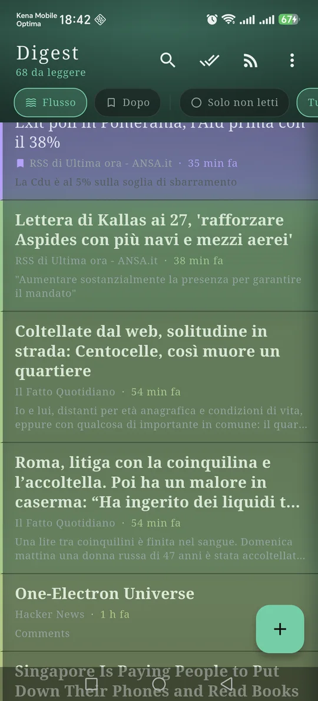
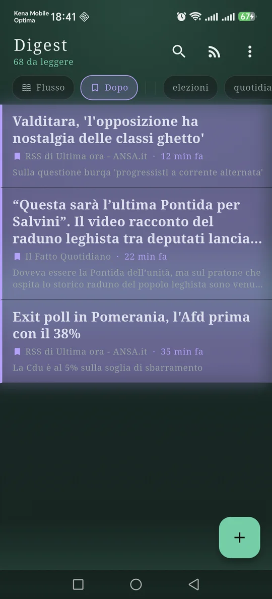
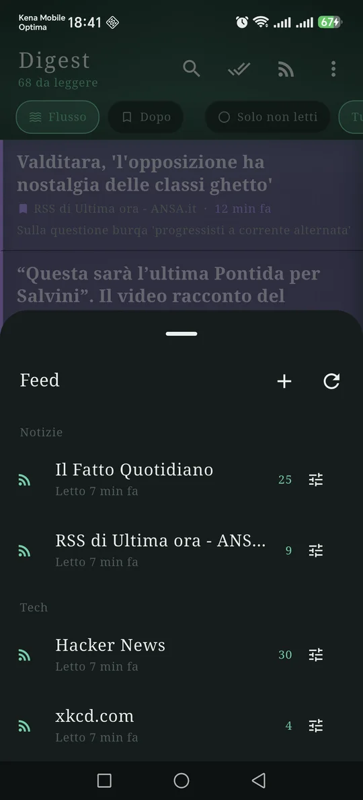
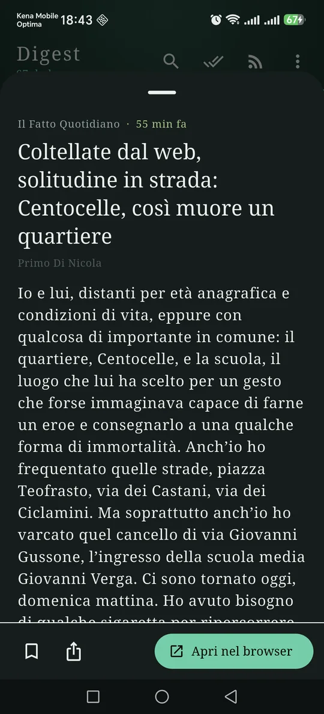

ItalianoEnglish
It opens on the list of the sites you follow, newest at the top. Every article carries a rail on its left: thick and green when it landed a minute ago, a faded hairline when it is from last night. The age is not a date printed small for you to go and read — it is the colour of the row, and you have it before you have finished scrolling.
A tap opens the text the feed sent, without going through the browser. A swipe to the left puts the article in the Later list, which keeps a copy on the phone: it stays there when the site takes the page down and when the feed moves on. A swipe to the right marks it read, and the row stays where it is, so that scrolling is an account of what arrived rather than a queue to empty.

Green landed just now, amber this morning, grey yesterday. No date to read. 
What you set aside is your own copy, with its own tags. The site can take it down. 
Feeds sit under their categories, with what is left to read in each. 
The text the feed sent, right here. The browser opens only if you ask it to.
What it does
- It finds the feed for you. Paste a site's address and Digest looks for the feed inside the page: RSS, Atom or JSON Feed, however the publisher serves it.
- Categories, to keep work away from the morning news. A category is a field on the feed, not a folder: moving one costs a tap.
- Tags, on feeds and on individual saved articles. A feed's tags say what the source is about; an article's say what that one piece is about.
- The Later list is made of copies. Not a bookmark that one day leads to a page that is gone: the text is on the phone, and it stays until you remove it.
- Read and unread both stay in the list. A filter shows only the unread ones when you need it; the rest of the time the list tells the day instead of emptying itself.
- Search across titles and the text already downloaded, not across addresses.
- OPML in and out. Your list of feeds comes over from the reader you were using and leaves whenever you want: the tags travel in an attribute of ours that other readers step over without breaking.
- Quiet refreshing. Half an hour apart at most, a few sources at a time, and a site that answers “nothing has changed” is believed: the traffic an app causes is traffic somebody pays for.
- In English and Italian, following the phone's language.
The sources are yours, and so are the servers
Digest is the first MCMA app that talks to servers its user chose, and how it does that is the reason this page exists. There is no service of ours collecting the feeds and handing them to you pre-chewed: the request leaves your phone and reaches the site, over HTTPS, with no cookies kept between requests and no credentials. A source that only exists over plain HTTP is fetched only if you turn the switch on yourself, and the app says so.
Article images almost always live on servers other than the feed's, often third parties whose business is counting who looked. That is why they have a switch of their own: while it is off, Digest contacts none of them and shows the text.
Your data stays yours
Feeds, categories, tags, downloaded articles, the copies you set aside and which ones you have read are files on the phone, and they go on uninstall. There is no account and no Digest server: what you follow and what you read does not reach us because it does not pass through us, and it does not reach the ad SDK either. What leaves the phone is what any site sees when you ask it for its feed — the IP address and the address requested — plus what Google AdMob collects for the banner, set out in the privacy policy.
How it is paid for
One banner anchored at the bottom, and that is all: no ads inside the app, no subscription, no feature held hostage.
Where to find it
Not on Google Play yet. The link will appear here when it is.